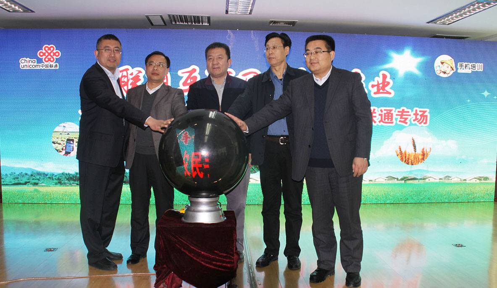
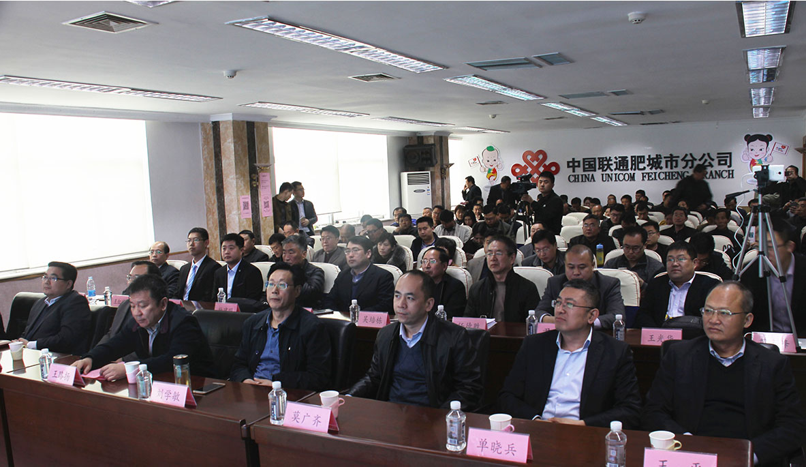

在“互联网+”深度嵌入各行各业、手机智能应用在广大农村地区愈发普及的当下，如何让“互联网+”与农业发展碰撞出融合与助力的火花？怎么通过手机APP应用让亘古不变的耕种手段实现提档升级、让农民种地变得更容易？如今，经济大省山东通过一场场由政府主导“办班”的技能培训，给出了答案。
在刚刚过去的17日，泰安肥城的众多农户们迎来了一个“大事件”：山东省农民手机应用技能培训活动周启动仪式在这里举办。这一培训活动周，由山东省农业厅联合山东联通联合举办。启动仪式当天，来自肥城的100多位农技站技术员、种粮大户、果农纷纷来到现场参加培训，更有高达上万人通过联通“美丽乡村”APP平台观看着这场培训的直播。
在刚刚过去的17日，泰安肥城的众多农户们迎来了一个“大事件”：山东省农民手机应用技能培训活动周启动仪式在这里举办。这一培训活动周，由山东省农业厅联合山东联通联合举办。启动仪式当天，来自肥城的100多位农技站技术员、种粮大户、果农纷纷来到现场参加培训，更有高达上万人通过联通“美丽乡村”APP平台观看着这场培训的直播。
这一启动仪式的举办，也代表着由山东省农业厅、山东联通联合举办的山东省农民手机应用技能培训活动周，正式在幅员辽阔的齐鲁大地上拉开了帷幕。
培训会启动仪式
中国联通集团客户事业部王路扬总监、山东省农业厅市场与经济信息处刘学敏处长、泰安市农业局副局长许立波、山东福生佳信科技股份有限公司董事长单晓兵一同参加了启动仪式。简短的仪式结束后，相关专家随即在现场对农户们进行了“互联网+”现代农业培训以及美丽乡村APP操作培训。追溯这一由官方主导的培育周的举办初衷，“让手机成为农民增收致富的好帮手”是系列活动最大的主题。
联通泰安肥城培训会现场
一天之后，这一系列专场培训又在莱芜“开讲”。尤其令人感到欣喜的是，下一步，在山东省农业厅指导一下，山东联通、山东福生佳信科技股份有限公司还将进一步加强合作，按照“成熟一个，推广一个”方式，陆续在全省17个地市的49个市辖区、31个县级市、60个县开展手机应用平台推广，提升广大农民的手机应用技能，助力农村信息化建设，推进山东农业向“现代农业4.0时代”迈进。一个新的时代，就此开启。
山东省果树研究所专家在现场为农民讲授肥城桃的栽培与管理
虽然智能手机已在农村地区现了普及，但是对不少农户来说，手机还仅仅是一个用于联络、通讯的工具。让手机成为农民增收致富的好帮手?这件事，在不少农户心里还是个“不可能的事”。
“用手机还用培训？不就打个电话，发个短信吗？这我都会啊！”一位40多岁的农户问道。
“老乡，现在手机都是智能手机，功能非常强大，手机现在可不是只用来打电话、发短信，通过智能手机，你不仅能浏览新闻、缴话费、收款、贷款，还能通过手机管理农作物生长，了解各地粮食价格、产量等，别小看这个小小的手机，用好了，它能帮你种地呢！”一位工作人员笑着对老乡解释说。
这一幕，就发生在山东省农民手机应用技能培训活动现场。正如这位工作人员所说，农民手中的智能手机，如果和“美丽乡村”APP相结合，不仅可以帮助农民解决“三农”生产中的疑难问题、还能帮助农户增收致富。
据悉，山东联通汇集地方政府和用户需求，推出了山东省首个“美丽乡村”综合信息化服务平台，提供专属大流量、低资费产品，开展信息化应用下乡活动，解决了农村区域日常政务管理、扶贫脱贫、基层党建、农业生产、文化娱乐中的痛点问题，得到了地方政府和农村用户的高度认可。“美丽乡村”平台由山东联通和山东福生佳信科技股份有限公司共同研发运营，通过整合各类农业科技资源和系统，借助现代农业信息技术和移动互联网技术，推出了手机APP，建立了全方位、多渠道、高效率的农业科技信息服务体系，使农民能够随时随地接收和学习农业科技知识，让农业科技信息得以“进村入户”，满足了农民对农业信息资源的需求，促进农业增效、农民增收。
济南、东营、德州、潍坊、枣庄……如今，“美丽乡村”APP已在山东遍地开花。作为一款农村信息综合服务平台，“美丽乡村”APP着力通过信息化手段进行农技推广和远程教育，及时解决农民在生产生活中遇到的实际问题，为扶贫攻坚、三农发展提供技术保障，也为农民提供全方位的手机应用培训课程。
“未来，‘美丽乡村’平台将秉持‘培训先行、应用为王、长效运营’的理念，不断加强对农民手机应用技能和信息化能力的培训，进而激发农村发展新活力，推动现代农业实现新跨越！”“美丽乡村”平台负责人的一席话，也折射出了“美丽乡村”APP在推进农村信息化建设、助力“互联网+农业”发展领域的壮志雄心。